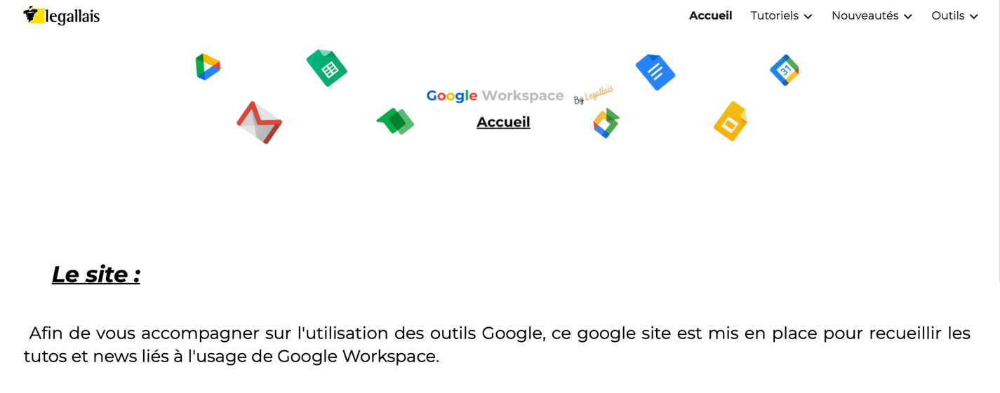

Google Workspace chez Legallais
Le projet intervient lors d'un besoin des collaborateurs de pouvoir avoir accès à des ressources/tutoriels/astuces concernant les outils de Google Workspace
Fonctionnalités
- Prendre des rendez-vous
- Créer un ticket depuis le site
- Tutoriel et astuces sur Google Workspace à dispositions
Technologies utilisées
Google Sites